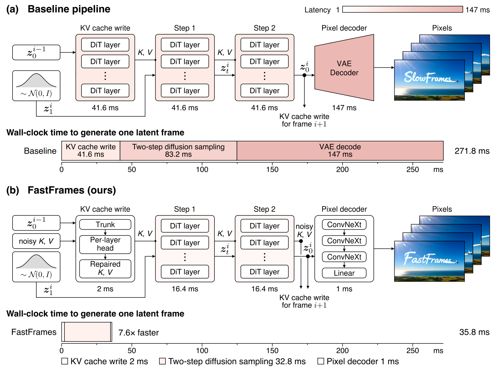

14 ms (8 GPUs)
45 ms (8 GPUs)
Each demo runs a model's official implementation (left) and the same model with FastFrames optimizations (right), given the exact same input at the exact same time: LingBot with keyboard navigation and RealWonder with physics-based dragging.
Autoregressive video diffusion models generate frames based on new observations and inputs, making them a promising medium for interactive visual experiences. However, existing models are at least an order of magnitude too slow for fluid interaction. This paper introduces FastFrames, a family of fast autoregressive video diffusion models that achieves interactive latency without compromising quality.
We profile the inference pipeline of state-of-the-art models and find that operations often treated as fixed implementation details, such as VAE decoding and KV cache updates, in fact account for over half of end-to-end inference latency. We challenge the assumption that these components are indispensable and replace them with lightweight alternatives.
Our 1.3B variant runs at 36 ms per frame, or 28 responses per second (RPS), on a single B200 GPU while matching the generation quality of a state-of-the-art model that is nearly 8× slower. Our 14B variant runs at 45 ms per frame, or 22 RPS, on an 8× B200 GPU node and yields significantly better visual quality and realism.
We show that FastFrames enables real-time interaction in applications such as camera-conditioned and physics-conditioned video generation.


A random selection of prompts and generated videos. Click on "Prompt" to view the text conditions.
FastFrames-S preserves the visual quality of CF++ while being nearly 8× faster. FastFrames-L achieves realism, prompt adherence, composition, and text-rendering capabilities comparable to Krea-Realtime while being over 10× faster. Compared with their 1.3B counterparts, the 14B models (FastFrames-L and Krea-Realtime) produce more realistic lighting and shadows, more coherent compositions, and more legible text.
Clock labels show end-to-end latency for one generation unit at steady state and at 480p on NVIDIA B200 GPUs.
@article{chou2026fastframes,
title = {FastFrames: Video Generation at Interactive Latency},
author = {Chou, Gene and Yang, Guandao and Luan, Fujun and Mescheder, Lars and
Dong, Wei and Richter, Stephan R. and Koltun, Vladlen},
journal = {arXiv preprint},
year = {2026}
}